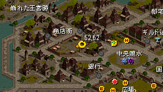
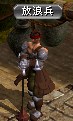
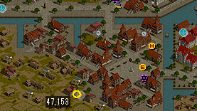
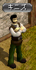
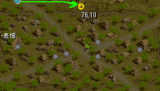
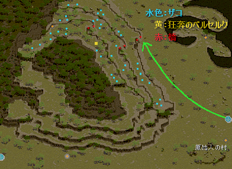
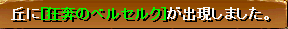
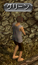
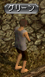

（５２，６２）
１０万品売りのペイトンのすぐ右下あたり（５２，６２）にいる。
 
◆毎時００分付近に始めよう
このクエは特殊で、
放浪兵に話しかけてクエ受諾→まわりの４人のＮＰＣに話しかける の後、
毎時００分～１０分（０：００～０：１０、１：００～１：１０、２：００～２：１０、・・・）の間だけ放浪兵が反応し、クエを進める事が出来る。
さらに少し後に出てくるＮＰＣ（ビガプールのキニズ）は、毎時００分～０５分と３０分～３５分の間だけ反応する。
以上を踏まえると、
００分ちょうどぐらいで始め、０５分になるまでにキニズまで一気に進めてしまうのがおすすめ。
目安として１～２分程度あればキニズまで終わらせられる。
ベルセを取らせたいキャラがたくさんいる人は、
２回目の放浪兵の手前（４人のＮＰＣと話し終える所）まで全キャラあらかじめ進めておき、００分になったら一気にその先をやるとよいだろう。
話しかける順番が決まっており、
バリカス→ペイトン→ドロシー→リネーシア の順。
バリカスから反時計周りに話しかけていくとよい。
（５２，６２）
ここの放浪兵は毎時００分～１０分のみ反応し、進める事が出来る。
（４７，１５３）
 
前述の通り、
キニズは毎時００分～０５分と、３０分～３５分のみ反応し、進める事が出来る。
（７６，１０）
ラカリフサに飛ぶとよい。
風の羽を使わない人は
ミラーテレポータ
１１１３７
で、ネイダック平原／ラカリフサ北部地域に飛び、
そこから右下の移動ポータルへ入るとよい。
ハイジはラカリフサに入って右方面（７６，１０）にいる。
ハイジの前を記憶１推奨。


現地に飛ぶとよい。
風の羽を使わない人は
ファストポータル
ナラダ平原の沼地帯／ノーススワンプ
で、飛んだ先の移動ポータルを入って現地へ。
現地へ入って左上に進み（下図の緑の矢印）、
階段を上がった先に対象ＭＯＢ（水色の点）がいる。

◆記憶２を使うと楽
「狂奔の～」系のモンスター（ザコ：水色の点）を１００匹倒す。
マップの構造上、周回しにくいので
記憶を使うと楽。
参考までに、
私は山の一段目の一番左上を記憶２し、
右下にずっと狩って行き、一番右下まで行ったら記憶で戻る、
という方法でやった。
◆ＰＴを組んで、一緒にやると楽
ＰＴメンバーが倒してもカウントされるので、
同じクエを受ける人がいたら、ＰＴを組んで一緒にやると楽だろう。
クエを受けていない人がお手伝いしてもカウントされる。
（７６，１０）
ザコ（水色の点）を狩ると、
一定確率で以下のようなメッセージが出て、

黄色の位置に「狂奔のベルセルク」が出現、これを倒す。
黄色の位置から近い方が出やすい、というものではなさそうなので、
前項と同じ狩り方でよいと思う。
なかなか出ない事がある。粘り強くやろう。
（７６，１０）
ベルセルク２は、このハイジからスタートなので、
２以降もやりたい人は、そのまま続けて話しかけよう。
 
